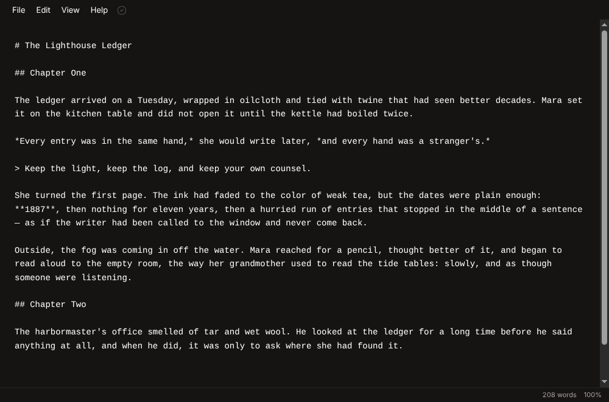

A Markdown editor for writers, for Windows 10 and 11
PicoMarQ is for writing prose: chapters, articles, essays, letters. You see formatted text as you type, with headings, italics, bold, quotations and lists, and your work is saved as a plain Markdown file that any other program can read. The Markdown itself is one keystroke away.
Most Markdown editors are made for programmers and note-takers. PicoMarQ leaves out the file trees, tags, code tools and AI, and keeps what a writer reaches for every day: a spelling checker, a live word count, smart quotes and dashes, Find and Replace, and a page you can set up the way you like.
>The Markdown is there when you want it and out of sight when you don’t.
Version 1.3.4 with a story in progress. The quotation is selected, so the count at the bottom right reads “11 of 208 words.”
##Install
Download PicoMarQ-Windows-x64-1.3.4.zip and extract the whole archive to a folder you can write to.
Open the extracted PicoMarQ folder and run PicoMarQ.exe. There is no installer and no account. The folder carries its own copy of the engine the program runs on, which is why the download is 153 MB.
Windows SmartScreen may object the first time, because the program is not code-signed. Choose More info, then Run anyway. Each release page lists SHA-256 checksums if you want to verify the file first.
To open Markdown files with a double-click, right-click a .md file, choose Open with, pick PicoMarQ.exe (you may have to browse to it), and choose Always.
Updating: close every PicoMarQ window, then replace the contents of your PicoMarQ folder with the new one. Your settings and recovered drafts live in your Windows user profile and are kept. If you saved themes, keep the Themes folder.
Every release, with its source archive and checksums, is on the Releases page.
##Writing in PicoMarQ
Spelling. The whole document is checked in US English as you write, including text you open or paste. Right-click a word with a red line for suggestions, Ignore All (for this document), or Add to Dictionary (for good). Settings can clear the words you have added.
Word count. The count at the bottom right follows every keystroke. Select some text and it reads “56 of 1,234 words.”
Smart quotes and dashes. Straight quotes become curly ones, two hyphens an em dash, and three periods an ellipsis, as you type. Backspace takes the change back, and Edit > Apply Smart Typography converts a document you wrote elsewhere.
Two views of one file. The formatted view is where you write. Ctrl+Shift+M shows the Markdown source, for when you want to see exactly what is in the file. Tables, links, images, task lists, math and diagrams work too.

The same file in the dark theme, as Markdown source.
Your page. Light or dark, any font installed on your computer, a point size from 12 to 24, your own colors for headings, bold and italic, the width of the page, and the zoom. Save the whole look as a theme file and load it on another computer.
One window per document. Put two drafts side by side or on separate monitors. Saving is yours to do (Ctrl+S), but unsaved work is kept: if Windows or the computer stops unexpectedly, PicoMarQ brings your drafts back. It also warns you before overwriting a file that another program has changed.
All the shortcuts are listed in KEYBOARD-SHORTCUTS.md, which also comes with the program.
##What it does not do
There is no notes library, no folders or tags, no cloud or sync, no AI, and no export to Word or PDF. Spelling is checked in US English only. It runs on 64-bit Windows 10 and 11, and nowhere else. PicoMarQ edits one Markdown file per window and stays out of your way.
##Where it comes from
PicoMarQ is built on Scratch, a Markdown note-taking app by Eric Li and its contributors. It keeps Scratch’s editor and its calm, and reshapes them for writers rather than note-takers. If you want a notes library with folders, links between notes, AI editing or Git sync, or a version for the Mac or Linux, use Scratch itself.
PicoMarQ is MIT-licensed, as Scratch is. The program runs on Electron. The notices for everything it includes ship with it in THIRD-PARTY-NOTICES.txt. This page is set in Literata, under the SIL Open Font License.